|
| Perfect
Dark : Grid |
| Un
tout petit Niveau pour un Max de plaisir !! Bien pensé, symetrique
mais pas trop, le Grid est un des Meilleurs Niveaux de Perfect Dark
! Il est relativement simple à mémoriser. Deux grandes
Salles reliées par 4 Voies (2 au Sol, 2 à l'Etage) et
un Ascenseur. L'équilibre entre gros et petit est évident
: Piliers et Grande Salle, Couloirs et Ascenseur. C'est une sorte
de mélange entre Felicity et Temple, et ça marche très
bien ! Vous voulez voir de quel Film est inspiré une Salle
de ce Niveau ? Regardez donc cette Vidéo ! |
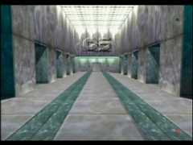 |
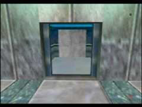 |
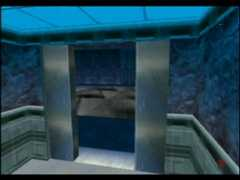 |
A la diversité du Plan répondent de très bons graphismes tout en sobriété. Dalles en Verre, Carrelage, Plafond de Néons, nuances de bleus... Un Niveau qui n'agresse pas les yeux. Au niveau du Son, c'est sympa aussi car on a droit a des vitres brisées et une Sonnerie d'Ascenseur. Réaliste, en gros. |
 |
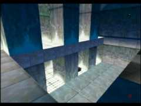 |
 |
Au niveau Jouabilité, c'est parfait ! Juste 2 Escaliers très simples à apprivoiser, et un Ascenseur pour corser le tout sans tomber dans le Syndrome "Echelle"... En résumé, un Très bon niveau, au meme Niveau que le Complexe. |
 |
 |
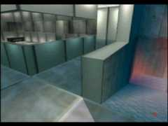 |
Allez savoir pourquoi, mais les Simulants ADORENT l'Ascenseur. Ils s'en servent presque toujours pour passer d'une Salle à l'Autre, et le gardent dangereusement bien. C'est une très bonne nouvelle car on peut très facilement les avoir sur ce coup-là. Déposez-y un Dragon et ils viendront se jeter dedans à toute vitesse. A part çà faites attention aux 2 Grands Espaces. Pour le reste, pas de probleme : tout est là pour vous aider : Portes Coulissantes, Points de Vues imparables (Labo, Escalier) et le Tour est joué. Comme pour l'Entrepot Warehouse, attention aux Explosifs. Rien de plus, d'autant que là les couloirs sont un tout petit peu plus tordus. |
 |
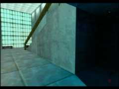 |
 |
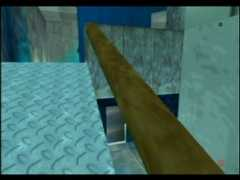 |
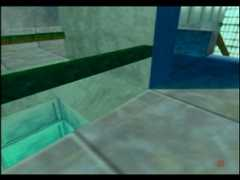 |
 |
Des Endroits pour Camper ? Il y en a... mais ce n'est pas de tout repos. Le Premier est situé dans le recoin juste sous l'Escalier, à coté d'une Porte Coulissante. Bien tapi dans une obscurité bleue, vous serez invisible pour qui passe rapidement devant vous. Et là à vous de sortir de votre tanière pour croquer. Le Deuxième Endroit est épuisant. C'est le Labo. En effet, il y a 2 voies d'accès. Cependant, en faisant couramment des allez-retours, vous pouvez vous constituez un nid douillet en truffant les 2 chemins de Mines ou de Dragons. En équipe, cet endroit est quasiment inaccessible si chacun garde un coin. Le Troisième Endroit pourrait être l'Ascenseur. En jouant bien, on peut se laisser enfermer dedans et tomber sur d'éventuels utilisateurs. |
| Le
Grid dans Conker's Bad Fur Day ! |


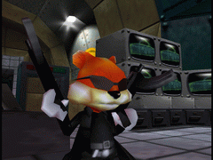
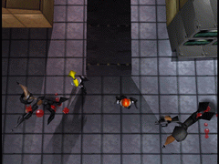

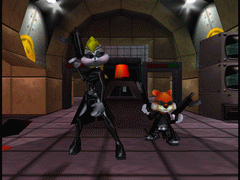